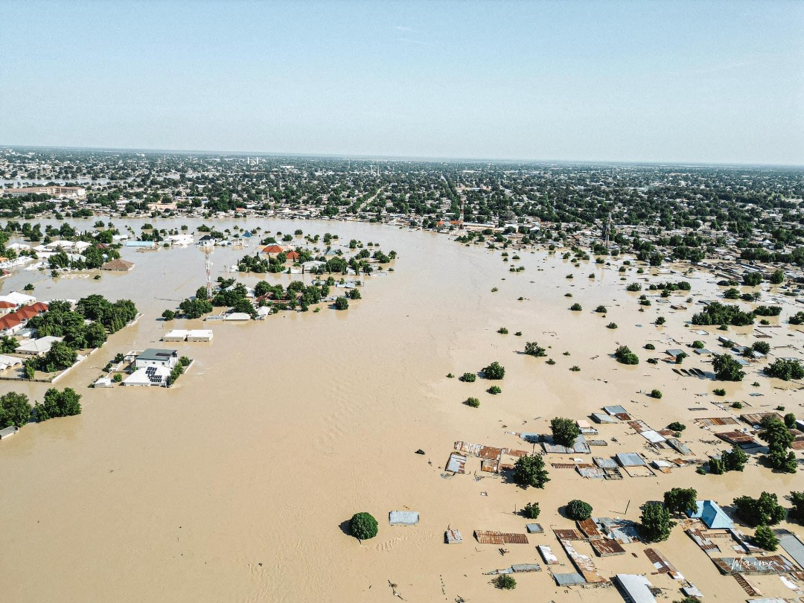

Intro
Flood mapping using remote sensing is useful for assessing the impact of extreme weather events on communities and infrastructure.
In September 2024, parts of Borno State, Nigeria, experienced flooding following the collapse of the Alau Dam. Majorly affected were Maiduguri and Jere local government areas, with the National Emergency Management Agency reporting that over 70% of Maiduguri’s residents were forced to flee their homes. The tragedy resulted in the loss of at least 150 lives. According to the United Nations refugee agency in Nigeria, this was the worst flooding to hit the city in thirty years, affecting over one million people and causing widespread displacement.
This report outlines a methodology for detecting and mapping flooded areas in Maiduguri and Jere Local Government Areas (LGAs) in Borno State, Nigeria, using Sentinel-1 SAR imagery and Google Earth Engine (GEE).
Data and Study Area
The study utilized Sentinel-1 Synthetic Aperture Radar (SAR) data, processed for the VH polarization channel. The target area includes Maiduguri and Jere LGAs, centered on the Alau Dam. The timeframes analyzed were:
Before Floods: August 15, 2024, to September 10, 2024
After Floods: September 10, 2024, to September 23, 2024
The study area is defined by filtering administrative boundary data from the FAO GAUL dataset, isolating the two LGAs based on their names and the state they belong to. The combined geometry is used to center the map view and restrict the spatial extent of the analysis. The location of Alau Dam is marked with a red symbol.
Images captured in Interferometric Wide (IW) mode with “VH” polarization and a 10-meter resolution are selected. Further, the script narrows the data to descending orbits and clips the images to the study area’s bounds. Two time periods are defined: a “before” period preceding the floods and an “after” period covering the post-flood phase. Radar backscatter images from these periods are mosaicked and clipped to the study area, creating two layers that allow for a temporal comparison of flood impacts. These layers, visualized with appropriate ranges, highlight changes in surface water or vegetation.
var s1 = ee.ImageCollection("COPERNICUS/S1_GRD"),
gsw = ee.Image("JRC/GSW1_4/GlobalSurfaceWater"),
hydrosheds = ee.Image("WWF/HydroSHEDS/03DIR");
// Select images by predefined dates
var beforeStart = '2024-08-15'
var beforeEnd = '2024-09-10'
var afterStart = '2024-09-10'
var afterEnd = '2024-09-23'
var admin2 = ee.FeatureCollection("FAO/GAUL_SIMPLIFIED_500m/2015/level2");
var maiduguriAndJere = admin2.filter(ee.Filter.and(
ee.Filter.inList('ADM2_NAME', ['Maiduguri', 'Jere']), // Filter by the LGA names
ee.Filter.eq('ADM1_NAME', 'Borno') // Filter by the state name
));
var geometry = maiduguriAndJere.geometry();
Map.centerObject(geometry); // Center the map on the combined geometry
Map.addLayer(geometry, {color: 'grey'}, 'Maiduguri and Jere LGAs');
var damLocation = ee.Geometry.Point(13.28500, 11.72417);
var damFeature = ee.Feature(damLocation, {
'name': 'Alau Dam'
});
var filtered = s1
.filter(ee.Filter.eq('instrumentMode', 'IW'))
.filter(ee.Filter.listContains('transmitterReceiverPolarisation', 'VH'))
.filter(ee.Filter.listContains('transmitterReceiverPolarisation', 'VV'))
.filter(ee.Filter.eq('orbitProperties_pass', 'DESCENDING'))
.filter(ee.Filter.eq('resolution_meters', 10))
.filter(ee.Filter.bounds(geometry))
.select(['VH'])
var beforeCollection = filtered.filter(ee.Filter.date(beforeStart, beforeEnd))
var afterCollection = filtered.filter(ee.Filter.date(afterStart, afterEnd))
var before = beforeCollection.mosaic().clip(geometry)
var after = afterCollection.mosaic().clip(geometry)
Map.addLayer(before, {min:-25,max:0}, 'Before Floods', false);
Map.addLayer(after, {min:-25,max:0}, 'After Floods', false);
Map.addLayer(ee.FeatureCollection(damFeature), {
color: 'red',
width: 2,
pointSize: '10px',
pointShape: 'diamond'
}, 'Alau Dam Location');Image processing
The following code segment applies image processing to enhance the quality and accuracy of flood detection. The radar backscatter images for the “before” and “after” periods are refined using the Refined Lee filter, a method designed to reduce speckle noise inherent in radar data. This step ensures that meaningful variations in backscatter values are preserved while minimizing random noise. The processed images are then converted between decibel (dB) and natural scale as necessary for the filter application, followed by a final conversion back to the dB scale. The filtered images are added as new layers to the map.
The script proceeds to compute the difference between the filtered “after” and “before” images to quantify changes in backscatter values that could indicate flooding. A threshold value of 0.8 is applied to this difference image to classify pixels as potentially flooded. Pixels exceeding this threshold are isolated using a self-masking operation, creating a binary flood layer. This initial estimate of flooded areas is visualized on the map in orange, providing a clear representation of flood impacts within the study area.
var beforeFiltered = ee.Image(toDB(RefinedLee(toNatural(before))))
var afterFiltered = ee.Image(toDB(RefinedLee(toNatural(after))))
Map.addLayer(beforeFiltered, {min:-25,max:0}, 'Before Floods Filtered', false);
Map.addLayer(afterFiltered, {min:-25,max:0}, 'After Floods Filtered', false);
var difference = afterFiltered.subtract(beforeFiltered);
// Define a threshold
var diffThreshold = 0.8;
// Initial estimate of flooded pixels
var flooded = difference.gt(diffThreshold).rename('water').selfMask();
Map.addLayer(flooded, {min:0, max:1, palette: ['orange']}, 'Initial Flood Area', false);
Masking out areas with permanent/semi-permanent water, areas with more than 30 percent slope, and isolated pixels
// Mask out area with permanent/semi-permanent water
var permanentWater = gsw.select('seasonality').gte(5).clip(geometry)
var flooded = flooded.where(permanentWater, 0).selfMask()
Map.addLayer(permanentWater.selfMask(), {min:0, max:1, palette: ['blue']}, 'Permanent Water')
// Mask out areas with more than 30 percent slope using the HydroSHEDS DEM
var slopeThreshold = 30;
var terrain = ee.Algorithms.Terrain(hydrosheds);
var slope = terrain.select('slope');
var flooded = flooded.updateMask(slope.lt(slopeThreshold));
Map.addLayer(slope.gte(slopeThreshold).selfMask(), {min:0, max:1, palette: ['cyan']}, 'Steep Areas', false)
// Remove isolated pixels
// connectedPixelCount is Zoom dependent, so visual result will vary
var connectedPixelThreshold = 8;
var connections = flooded.connectedPixelCount(25)
var flooded = flooded.updateMask(connections.gt(connectedPixelThreshold))
Map.addLayer(connections.lte(connectedPixelThreshold).selfMask(), {min:0, max:1, palette: ['yellow']}, 'Disconnected Areas', false)In this portion of the code, further refinements are applied to the initial flood detection layer to improve its accuracy and exclude areas unlikely to be newly inundated. The first step removes permanent or semi-permanent water bodies from the flood classification. Using the “seasonality” band from the Global Surface Water dataset, areas with water present for at least five months of the year are identified as permanent water. These regions are clipped to the study area’s geometry and used to mask out such locations from the flooded layer. The resulting permanent water map is visualized in blue, while the updated flooded layer excludes these persistent water zones to focus solely on newly flooded areas.
Next, areas with steep terrain are excluded from the flood analysis based on a slope threshold of 30 degrees, using the HydroSHEDS Digital Elevation Model (DEM). The script calculates terrain slope and masks regions exceeding this threshold, as steep slopes are less likely to experience surface flooding. These excluded regions are displayed on the map in cyan, while the filtered flood map retains only areas with slopes below the threshold.
Finally, isolated pixels in the flooded layer are removed to enhance spatial coherence. This is achieved using the connectedPixelCount method, which identifies clusters of pixels based on connectivity within a specified neighborhood. Pixels in clusters smaller than the defined threshold of eight connected pixels are masked out, refining the flood map to show only significant and contiguous flooded areas. Disconnected areas are visualized in yellow for comparison.
Final estimate of flooded area
Map.addLayer(flooded, {min:0, max:1, palette: ['orange']}, 'Flooded Areas');
// Calculate Affected Area
print('Total District Area (Ha)', geometry.area().divide(10000))
var stats = flooded.multiply(ee.Image.pixelArea()).reduceRegion({
reducer: ee.Reducer.sum(),
geometry: geometry,
scale: 30,
maxPixels: 1e10,
tileScale: 16
})
print('Flooded Area (Ha)', ee.Number(stats.get('water')).divide(10000))
var floodedPercentage = ee.Number(stats.get('water')).divide(geometry.area()).multiply(100);
print('% flooded', floodedPercentage);To calculate the affected area, the total area of the study region is computed using the geometry.area() function, which returns the area in square meters. This value is converted to hectares by dividing it by 10,000 and printed for reference. The script then calculates the area of the flooded pixels using the multiply method, where each flooded pixel is multiplied by its corresponding area (in square meters) from the pixelArea function. These values are aggregated over the geometry of the study region using the reduceRegion function with a summation reducer. The result is the total flooded area in square meters, which is converted to hectares, which gives:
Total District Area (Ha): 100578.00808153523
Flooded Area (Ha): 36650.26144303433
% Flooded: 36.439637394014795
Flooded area are shown in orange below.
Validation
This script estimates that 36.4% of the study area is flooded, which is a somewhat lower value reported by ACAPS: 40%. It’s important to note that the two estimates may differ due to variations in data sources, processing methods, or temporal differences.
This project was completed after taking the course on Google Earth Engine for Water Resources Management led by Dr. Ujaval Gandhi